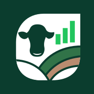

Fazenda Boa Vista
Uberaba · MG
Checkpoint de identidade visual · Sprint 005 · Proposta 01
Bovino · pastagem · dados

Cor de destaque em uso controlado
#0B3D2E#22C55E#1F2937#B88B6F#F5F7F4PNG local · área segura preservada

Amostras visuais isoladas do produto
Header desktop
Header mobile · largura de referência: 360 px
Botão primary · normal, hover, foco e desabilitado
Card básico · conteúdo fictício exclusivo desta prova
Uberaba · MG